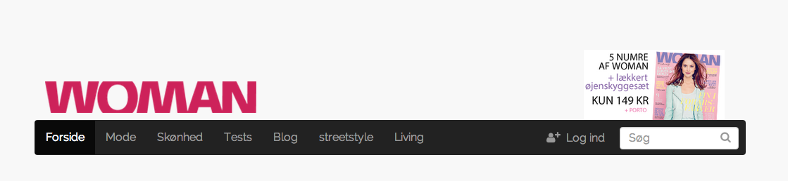

--- Introduction ---
This document describes the overall design patterns of the Bonnier platform (BP).
The White Album CMS forms the basis of the core HTML, CSS and JavaScript of the BP that external developers can access through an api. White Album is a “white label” CMS that mainly Benjamin Media and Bonnier Media Norway sites are built upon. All sites share a common core of Javascript, HTML and CSS, while individual skin-files enable stylesheet customization according to brand.
External partners may have different agendas and briefs, meanwhile, this guide targets projects that include extensions directly implemented into the platform and external projects that need visual coherence with a specific brand or the platform as a whole.
Technical patterns
The BP is build with object oriented CSS (OOCSS) in mind. As with any object-based coding method, the purpose of OOCSS is to encourage code reuse and, ultimately, faster and more efficient stylesheets that are easier to add to and maintain.
File structure
assets
|
|-- fonts
|-- images
| |
| |-- base
| |-- site names (eg. costume)
|
|-- javascripts
| |
| |-- frontend.js
| |-- modules
| |-- components
| |-- external
| |-- plugins
| |-- specific
|
|-- stylesheets
|
|-- global.css.scss
|-- global
| |
| |-- site
| | |
| | |-- modules
| | | |
| | | |-- _variables.css.scss
| | | |-- _mixins.css.scss
| | |
| | |-- breakpoints
| | | |
| | | |-- _small.css.scss
| | | |-- _medium.css.scss
| | | |-- _large.css.scss
| | |
| | |-- partials
| | |
| | |-- base.css.scss
| |
| |-- [one for each sub-project]
| |
| |-- breakpoints
| |-- modules
| |-- partials
| |-- base.css.scss
|
|-- skins
| |
| |-- site names (eg. costume)
| | |
| | |-- modules
| | | |
| | | |-- _variables.css.scss
| | |
| | |-- partials
| | |-- breakpoints
| | | |
| | | |-- _small.css.scss
| | | |-- _medium.css.scss
| | | |-- _large.css.scss
| | |
| | |-- base.css.scss
| |
| |-- _variables.css.scss
| |-- _vendors.css.scss
|
|-- _site_name.css.scss (eg. _costume.css.scss)Visual patterns
BP is made fully responsive enabled by the Bootstrap CSS-framework.
The platform is designed with a full-width mindset where each row contains “one impression”. This approach entails alternating user attention on editorial content and ads leading to an enhanced user experience and improved quality of adverts. Yet, this approach also entails a need to guide users down the site in order to keep them interested.

Most of the Bonnier products have access to quality photo material, which is utilized both off- and online. The web site visuals aim to support these images with limited color schemes and unpretentious graphics that do not steal attention from the content. This approach fits well into the content-centric web design trends that focuses on minimalism and simplicity.
Header & footer
The BP header and footer, which may be imported on external sites, consists of… A full width banner and optional side banners (horseshoe) The brand logo - as default it will be placed to the left
- magazine subscription offer to the right
- navigation menu with dropdown submenu
- footer containing background information about the publisher and links to related sites
Header:

Footer:
Your area of control:
Navigation
The navigation menu has drop downs to display sub pages of each section. On small displays, the menu will collapse into a button icon, which can be triggered to display a fold out menu instead.
Included in <head>
BP uses the HTML5 doctype:
<!DOCTYPE html>The <head> will further include :
- Twitter Bootstrap
- jQuery v. 1.10.2
- Font Awesome
- Relevant meta tags:
<meta charset="utf-8">
<meta name="viewport" content="width=device-width, initial-scale=1;">Bootstrap
BP is based on the CSS-framework Twitter Bootstrap. That provides a wide range of styles ready to use. Most significantly is the Mobile First responsive grid, which defines the overall structure of the platform.
BP does not include unused Bootstrap components. For this reason, here is a complete list of sub-libraries included on the platform:
- mixins
- normalize
- scaffolding
- type
- code
- grid
- tables
- forms
- buttons
- pagination
- pager
- labels
- list-group
- panels
- component-animations
- alerts
- utilities
- responsive-utilities
If you wish that other bootstrap elements are made available to you, please let us know.
Grid
The BP platform uses the 12 column responsive grid provided by Bootstrap.
The grid has four general breakpoints: extra small (xs), small (sm), medium (md) and large (lg). Currently that the large breakpoint still exists in our code base. We currently don’t use this, as we have to accommodate the specs from the current ad market. Horseshoe ads are still a popular media choice, because of this our websites have a maximum width of 960px.
In most cases these breakpoints will be effectuated as follows:
- xs: smartphone
- sm: tablet portrait
- md: 13” laptop
-
lg: desktop
Note that Bootstrap is a Mobile First framework meaning that the xs-breakpoint is the default. This means that media query exceptions should be applied to the larger representations and not the other way around.
Buttons
Use the Bootstrap buttons when a link needs special attention:
Button colors follow the overall site colors meaning that, for instance, the primary button has the primary brand color.
The Bootstrap buttons have been extended with a facebook styled button enabled by class .btn-facebook :
<button class="btn-facebook">Login med facebook</button>
Forms
Use Bootstrap’s form classes to style forms.
Select the smallest height sizing class for input fields: .input-sm
Alerts
Bootstrap provides a collection of alerts for user feedback messages . By default, they follow the standard colors described in the colors section.
See Bootstrap/alerts about how to use
Icons
Font Awesome is installed on BPP. Use these icon fonts whenever it makes sense and try to avoid images as they affect load times negatively. Also, using these fonts will maintain a consistent visual appearance.
See Font Awesome about how to use
CSS HELPERS
Headers and copy
Keep a clear hierarchy between different headers and copy. Each brand has a standard font that should be used on extensions as well to keep consistency.
The base font of copy is 16px and uses absolute pixel sizes (not ems or pt).
Use the tags h1, h2, h3, p etc. semantically and add the following classes to style headers and copy:
Headers:
Header-primary
Header-secondary
Header-tertiary
Header-quaternary
.header-primary
.header-secondary
.header-tertiary
.header-quaternary<h1 class=”header-primary”>A primary headline</h1>
<p>Some text</p>
<h2 class=”header-primary”>A semantically secondary headline, that visually looks the same as a primary headline</h2>Copy:
Copy
Copy-distinct
Copy-tiny
Copy-note
.copy
.copy-distinct //standard bold copy
.copy-tiny //small copy
.copy-note //small italic copyWysiwyg:
For wysiwyg generated copy wrap the content inside class .wysiwyg
<div class=”wysiwyg”>
<h2>My headline</h2>
<p>Text inserted by a WYSIWYG editor</p>
<blockquote>Which is neatly formatted to the look and feel of an article</blockquote>
<p>The .wysiwyg tag makes sure that all that user submitted content looks good even though the HTML code might not be.</p>
</div>Colors
Most magazine sites rely on good photo material. Thus, the designer should provide images space to breath and avoid disturbing color schemes on the sites. As a rule of thumb, strictly keep the color palette to the one defined for each brand (see brand section for specifics). Each brand will have a punch color, which can be used to accentuate elements, and some brands have a secondary color as well.
The main color palette follows the Bootstrap standard colors:
Brand color
Brand success
Brand warning
Brand danger
Links, buttons, alerts etc. will have the appropriate colors applied by default. If you need to color other elements, use the following classes:
.brand-color //text color
.brand-color-bg //background color
.brand-danger
.brand-danger-bg
.brand-success
.brand-success-bg
.brand-warning
.brand-warning-bg<div class=”brand-color-bg”>
A container with the brand color as background
</div>Widgets
Widgets form a central part on the BPP platform as modules that can be placed around the site and on front pages.
Widgets should be designed to span the full width of the site layout in order to follow the overall design pattern.
.widget use this class on the parent of all widgets of the site - adds a container and a (white) background-color to the element
<div class=”widget”>
<div class=”row”>
<div class=”col-md-12”>
Widget content
</div>
</div>
</div>Badges
Use the .advertorial-stamp class to add an advertorial badge on, for instance, the article lead image:
<div class='bounding-box'>
<div class='advertorial-stamp'>ANNONCE</div>
<img src='image.jpg 'alt='image name'>
</div>Bootstrap related
These classes group Bootstrap’s responsive hidden-classes:
.hidden-xs-sm
.visible-xs-sm
.hidden-md-lg
.visible-md-lgUse them like Bootstrap’s responsive utilities
Gutters
Use these gutter classes to add spacing between elements or to reset margin and padding on elements:
/* reset */
.gutter-reset
/* vertical */
.gutter-vertical
.gutter-vertical-lg
.gutter-vertical-reset
/* horisontal */
.gutter-horisontal
.gutter-horisontal-lg
.gutter-horisontal-reset
/* top */
.gutter-top
.gutter-top-lg
.gutter-top-reset
/* bottom */
.gutter-bottom
.gutter-bottom-lg
.gutter-bottom-reset
/* right */
.gutter-right
/* left */
.gutter-left<h1 class='header-primary gutter-reset'>
A header without margin or padding
</h1>
<div class='row gutter-top-lg'>
Content with a large margin to the header above
</div>Misc helpers
Simple helper classes that do what the title says:
.full-width
.max-full-width
.center
.fixed-center
.relative
.float-left
.overflow-auto
.hide-bgBrand styling (skins)
Woman
- Main color: #CF0C56
- Secondary color: #292929
- Background color: #f8f8f8
- Main font: Raleway
- Secondary font: Old Standard TT
Bobedre dk+no
- Main color: #222222
- Secondary color: #DF6F06
- Background color: #ffffff
- Main font: Helvetica
- Secondary font: none
Bilmagasinet
- Main color: #c00c00
- Secondary color: #09729F
- Background color: #ffffff
- Main font: Arial
- Secondary font: none
Boligpluss
- Main color: #6b6496
- Secondary color: #c6c4dc
- Background color: #f0ede5
- Main font: Verdana
- Secondary font: none
Costume + Streetstyle dk
- Main color: #000000
- Secondary color: #f3a5a7
- Background color: #ffffff
- Main font: Lato
- Secondary font: none
Costume + Streetstyle no
- Main color: #000000
- Secondary color: #f3a5a7
- Background color: #ffffff
- Main font: BrandonGrotesque
- Secondary font: none
FHM
- Main color: #920C15
- Secondary color: #2e629d
- Background color: #ffffff
- Main font: Trebuchet
- Secondary font: none
Magasinet Liv
- Main color: #000000
- Secondary color: #e40044
- Background: pattern image
- Main font: Droid Serif
- Secondary font: Droid Sans
M
- Main color: #ea1d2c
- Secondary color: #000000
- Background color: #ededed
- Main font: Helvetica
- Secondary font: none
Penge
- Main color: #c00c00
- Secondary color: #f5f5f5
- Background color: #ffffff
- Main font: Arial
- Secondary font: none
Stella
- Main color: #333333
- Secondary color: #E25B82
- Background color: #ffffff
- Main font: Droid Serif
- Secondary font: Questrial
Tara
- Main color: #82002d
- Secondary color: #E25B82
- Background color: #fefefe
- Main font: Tahoma
- Secondary font: None
JavaScript
BPP uses jQuery v. 1.10.2 as the primary Javascript library. However, all functions are wrapped inside jQuery functions, so in case an external developer wishes to use another library, he can safely do so. Let us know if you experience any problems with this.
Scripts on the platform are minified and delivered through Rails’ asset pipeline meaning that all scripts are available anywhere and don’t need specific loading. However, this also entails that functions should be run only where they are needed by checking if the relevant DOM element is present.
Example:
if($('[data-component="element"]').length) {
runFunction();
}Data attributes
BPP JavaScript follows the patterns introduced by the Bootstrap community where DOM objects are interfaced through data-attrtibutes instead of classes and ids. This makes the relationship between scripts and markup more transparent.
Example:
Markup:
<button data-toggle="button">Button</button>Javascript:
$('[data-toggle="button"]').on('click', doSomething);Plugins
BPP uses internal jQuery plugins to interface reusable scripts. External developers are welcome to use these plugins or beware of the namespace they occupy.
$.checkRegex
Simple frontend regex script that returns true or false. Use it like this: $.checkRegex(stringToCheck, 'pattern');
Available patterns: numberIncluded, onlyNumbers, onlyLetters, hasLetters, isEmail, isImage, onlySpaces
$.breakpoints
Checks the window width and returns the breakpoint as a string xs, sm, md, lg. Use it as it is, e.g.:
if($.breakpoint() === 'md') {
doSomething();
}$.isTouchDevice
Detects if the site is accessed with a touch device. Returns true/false
$.extractSuffix
Splits a filename and returns the suffix as a string. For instance: $.extractSuffix('image.png') returns png.
Testing
All plugins are unit tested with Jasmine.js. The testing suite is only available internally, but we strongly encourage external developers to unit test scripts.
Components
BPP extends Bootstrap’s JavaScript components with a suite of features that can be initialized using data-attributes:
Image rotator
Easily create an image rotator by adding data-component="rotator" to a set of images with the following structure:
<div data-component="rotator">
<ul>
<li>
<figure>
<figcaption>
</figcaption>
</figure>
</li>
</ul>
</div>Modal image
Toggle a large version of any image to open in a modal. Initiate with data-toggle="modal-image"and provide a path to the the large scale image in data-image-lg="image-url">
Example:
<img src="image.jpg" data-toggle="modal-image" data-image-lg="image-large.jpg">Simple form validation
The simple form validation component is, as the title indicates, useful to validate small and simple forms. To use it, add data-regexwith a pattern (see list below) and data-error-msg with an error message to the input field that needs checked. On the submit button add data-toggle="check-regex", and on the same DOM-level place a container with data-toggle="alert-danger" to hold the error messages:
Example:
<form>
<input
placeholder="Telefonnummer"
data-regex="phone"
data-error-msg="Skal indeholde otte tal uden mellemrum">
<div class="alert alert-danger" data-toggle="alert-danger"></div>
<input type="submit" value="Submit" data-toggle="check-regex">
</form>Available patterns:
data-regex="phone": Checks if the input is a number of 8 digits without spaces
data-regex="name": Checks if the input only has letters
data-regex="email": Checks if the input is an email address
data-regex="is-adult": Checks the difference between the current year (2014) and the input year (e.g. 1984) and whether it’s more than 18 years ago
Tooltip
Initializes Bootstrap’s Tooltip plugin $('[data-toggle="tooltip"]').tooltip();